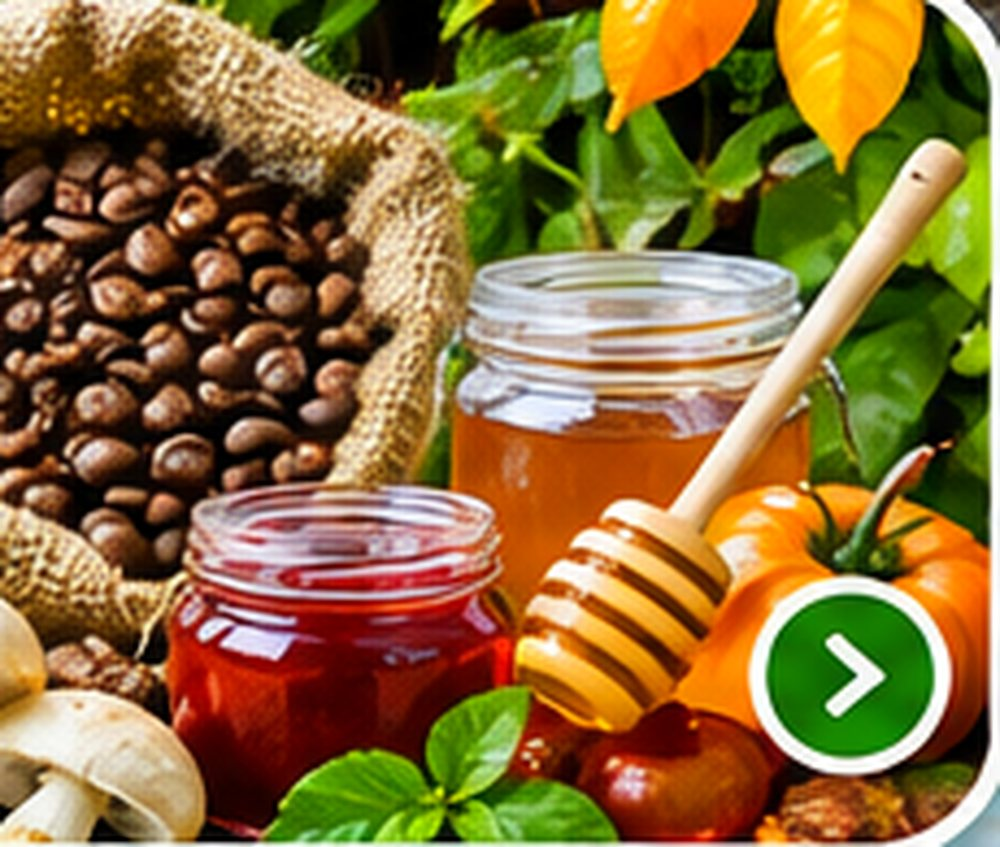

Cultivos de café
Conoce el origen y el trabajo detrás de cada cosecha.
Café, frutas, hortalizas, miel, hongos y productos transformados del territorio.
← Volver al inicioInformación para conocer el territorio con respeto y apoyar a sus comunidades.

Conoce el origen y el trabajo detrás de cada cosecha.
Café para disfrutar en casa o compartir.
Productos de huertas y cosechas de temporada.
Sabores del territorio según disponibilidad.
Productos apícolas de productores locales.
Hongos comestibles y alternativas de producción.
Preparaciones y conservas con frutas.